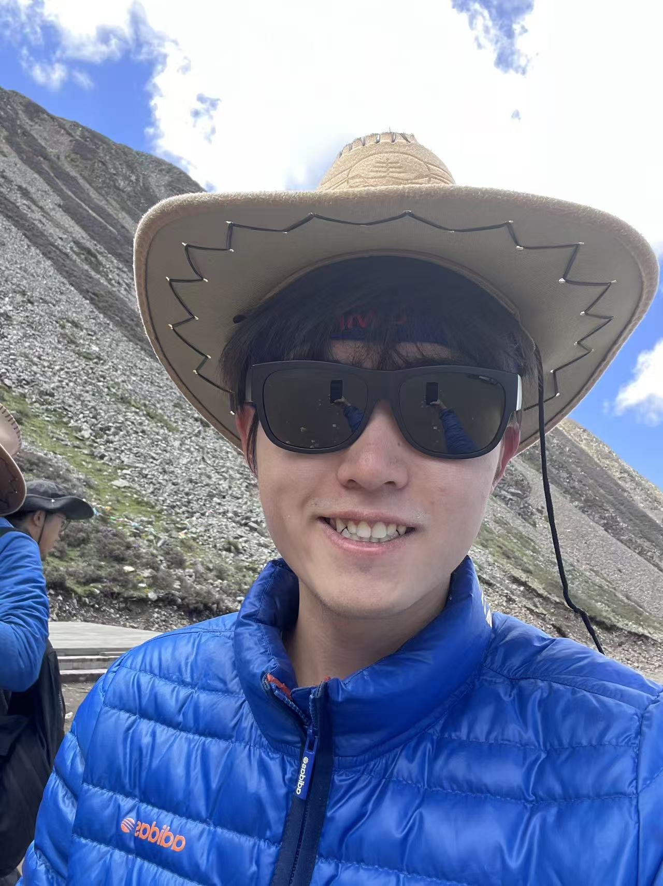
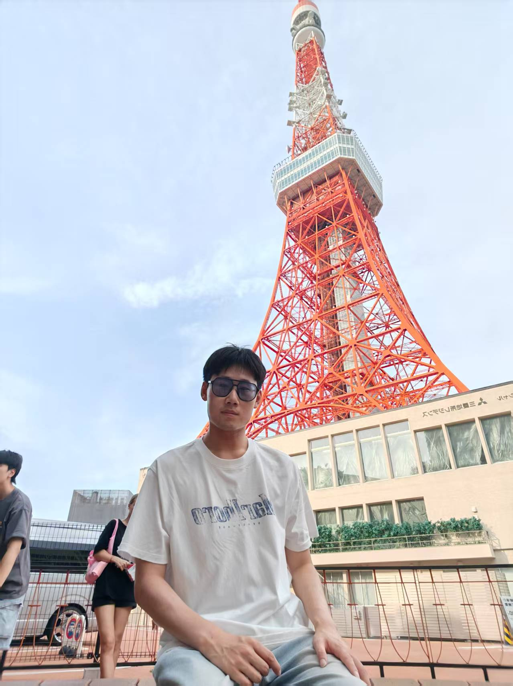
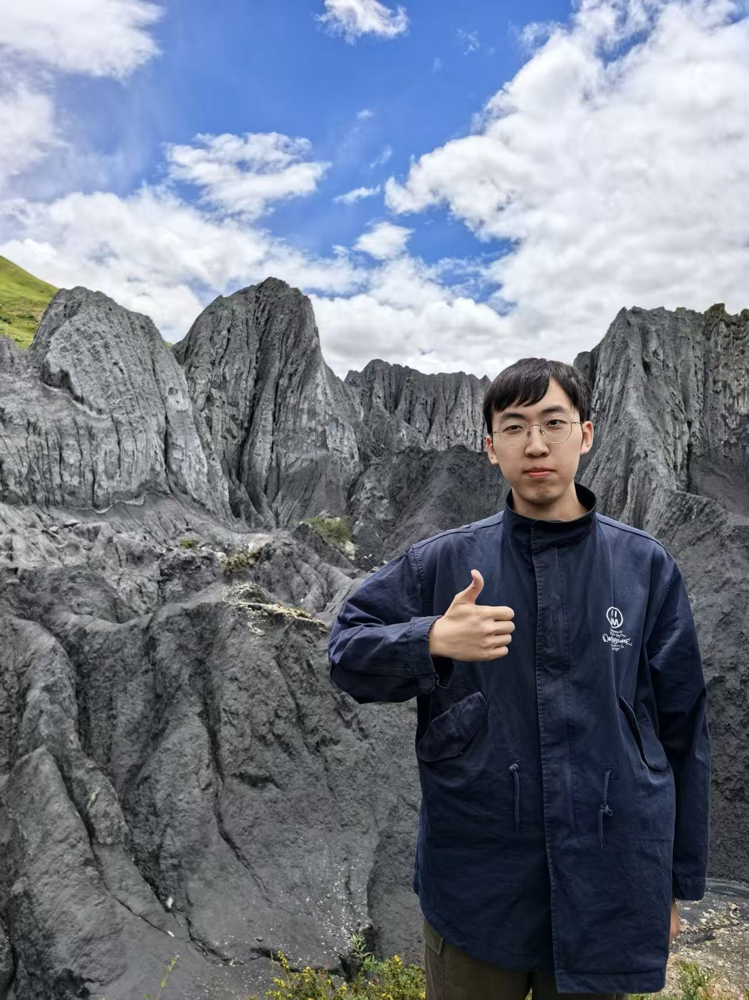
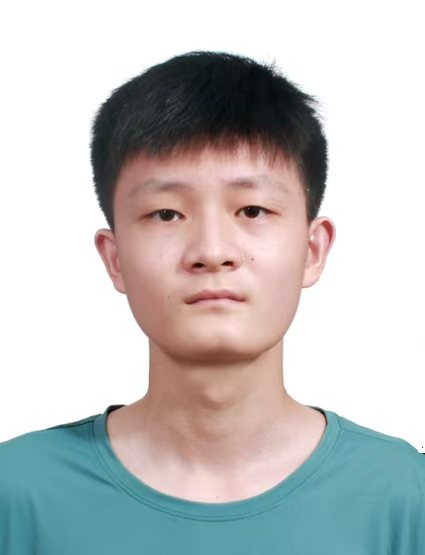
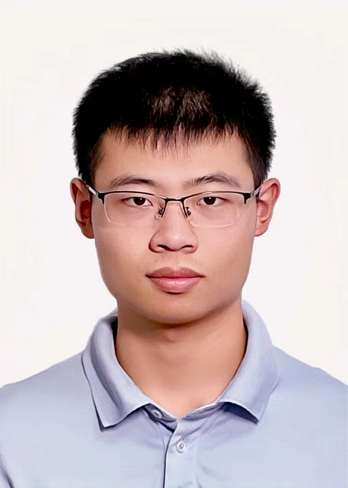
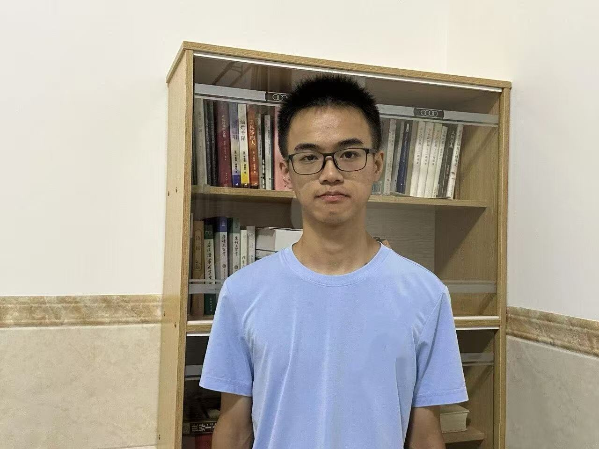
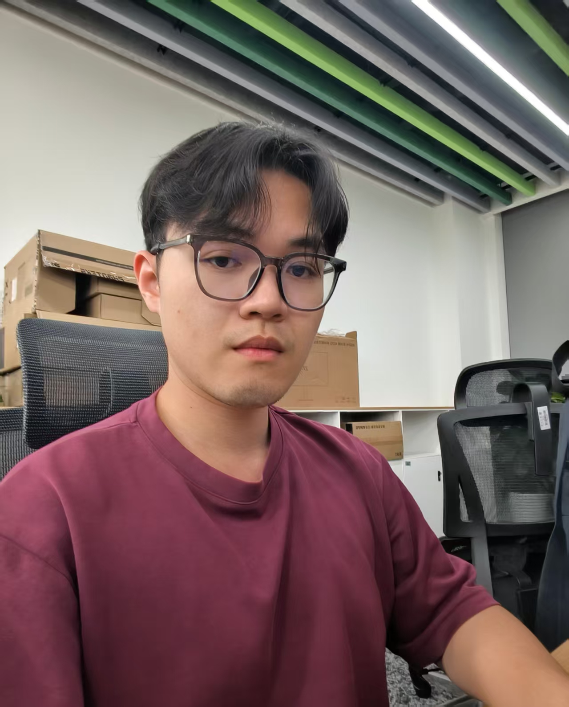

Xiao-Xiao Long
Associate Professor, Nanjing University
Research interests include 3D vision, physical AI, world models, and spatial intelligence.
We are interested in 3D vision, physical AI, world models, and human-centric spatial intelligence. This page is prepared for introducing current students and collaborators in the lab.
Associate Professor, Nanjing University
Research interests include 3D vision, physical AI, world models, and spatial intelligence.
2025 Fall; co-supervised with Prof. Xun Cao.
Research interests: Humanoid whole-body control and embodied intelligence.
Education background: B.Eng. and M.Sc. from Beijing Institute of Technology.
2026 Fall; co-supervised with Prof. Xun Cao.
Research interests: World models, autonomous driving, and augmented reality.
My talents are Heaven-given and meant for use; Gold spent in thousands shall return anew. (天生我材必有用，千金散尽还复来。)
2026 Fall
Research interests: World models and embodied AI.
Bachelor's degree from Wuhan University. PhD jointly trained by the Beijing Zhongguancun Academy and Nanjing University.
2026 Fall
Research interests: Human motion generation, 3D vision, and embodied intelligence.
I am also interested in world models, robotic motion control, and wearable human data collection.

2026 Fall
Research interests: Embodied intelligence, dexterous manipulation, and spatial intelligence.
I work on transforming visual observations and human demonstrations into spatially grounded, physically consistent, and executable robot manipulation skills.

2026 Fall
Research interests: Embodied AI, robot learning, and deformable object manipulation.
Outside of research, I enjoy football, cinema, and music that stays with me.
2025 Fall
Research interests: Video generation, world models, autoregressive modeling, 3D reconstruction, and spatial intelligence.
My current work focuses on novel-view video generation and world simulation for autonomous driving scenarios.

2025 Fall; co-supervised with Prof. Yao Yao.
Research interests: Controllable video generation and world models.
My work focuses on developing precise control over video content through AI.
2025 Fall; co-supervised with Prof. Hao Zhu.
Research interests: Whole-body control, reinforcement learning, and loco-manipulation.
The past, I now see, cannot be undone; The future, I know, is still within reach. (悟已往之不谏，知来者之可追。)
2026 Fall; co-supervised with Prof. Hao Zhu.
Research interests: World models and 4D reconstruction.
I received my bachelor's degree from the Department of Computer Science and Technology at Nanjing University, and now work on world models and 4D reconstruction under the supervision of Associate Professor Xiao-Xiao Long.
2026 Fall
Research interests: 3D perception and reconstruction.
I mainly focus on understanding and reconstructing complex real-world environments from visual data for robotics and autonomous systems.
2026 Fall
Research interests: World models, spatial intelligence, and 3D generation.
I am interested in building systems that understand, predict, and interact with the physical world.

2026 Fall
Research interests: Video generation, world models, autoregressive modeling, 3D reconstruction, and spatial intelligence.
Learn deeply. Think clearly. Act boldly.

2026 Fall
Research interests: Video generation, multimodal learning, embodied AI, and world models.
My current research focuses on video generation and controllable generative models.
Research interests: Robot learning, dexterous manipulation, and embodied AI.
My work focuses on developing object-centric and physically grounded representations for dexterous manipulation and generalizable robot learning from images, videos, and 3D meshes.
Research interests: Dexterous manipulation, hand-object interaction, tactile perception, and embodied AI.
My research focuses on dexterous manipulation, tactile perception, and robot learning for embodied interaction.

Research interests: Loco-manipulation and robot motion control.
My current work focuses on highly dynamic human-robot-object interaction, robotic loco-manipulation, and general control for humanoid robots.

Incoming PhD Student (2027 Fall)
Research interests: World models, 3D reconstruction, and spatial AI.
I work on 3D vision and generative world models, aiming to transform text, images, and videos into complete, spatially consistent, and interactive worlds.
PhD Student (2026 Fall)
Research interests: Humanoid robots and loco-manipulation.
Stay hungry. Stay foolish.
To be updated.